품질경영기사 (2014-09-20 기출문제)
1과목: 실험계획법
1. 3개의 수준에서 반복횟수가 8인 일원배치법에서 각 수준에서의 측정값의 합이 y1, y2, y3라 할 때, 관심을 갖는 대비는 다음과 같은 2개가 있다. 이 두 대비가 서로 직교대비를 이루기 위해서 k가 가져야 할 값은?
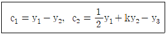
- 1
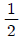
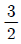
- -1
(정답률: 86%)

2. 화학공장에서 수율을 높이려고 농도(A), 온도(B), 시간(C) 3인자를 선정하여 반복 없이 실험한 후 분산분석표를 작성하여 유의하지 않는 인자를 풀링하였더니 최종적으로 다음의 분산분석표로 나타났다. 옳지 않은 것은? (단, F0.95(2,20)=3.49, F0.99(2,20)=5.85)
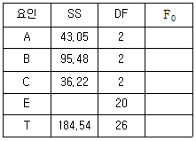
- 3인자 교호작용이 오차항에 교락되어 있다.
- A, B 인자만 유의하다.
- 오차항에는 2인자 교호작용이 풀링되어 있다.
- 반복이 없는 삼원배치 실험이다.
(정답률: 67%)
3. 제품을 조건 AiBj에서 각각 100회 검사한 결과 부적합품 수는 아래 표와 같다. Se1은 약 얼마인가?
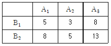
- 0.0⑤
- 0.016
- 0.023
- 0.⑤3
(정답률: 58%)
4. 다음 표와 같이 반복이 있는 22 요인 배치법에서 VA×B 는?
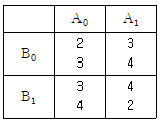
- 0.125
- 1.125
- 2.125
- 3.125
(정답률: 62%)
5. 모수인자 A를 3수준, 대응 있는 변량인자 B를 4수준으로 하여 반복 2회의 실험을 했을 때, 인자A의 불편분산 기대치는?
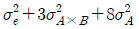
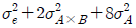
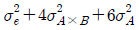
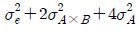
(정답률: 66%)
6. 난괴법의 조건이 아닌 것은?
- 하나는 모수인자이고, 다른 하나는 변량인자이다.
- 만일 A인자가 모수인자라면
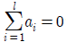
이다. - 만일 B인자가 변량인자라면
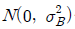
을 따른다. - 오차항은
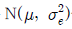
을 따른다.
(정답률: 57%)
7. 23형의 1/2 일부실시법에 의한 실험을 하기 위해 다음의 블록을 설정하여 실험을 실시하려 한다. 옳지 않은 것은?
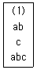
- 위 블록은 주블록이다.
- 인자 A의 효과는
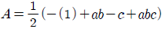
이다. - 인자 A는 교호작용 B×C와 교락되어 있다.
- 주인자가 서로 교락되므로 블록을 재설계하여 실험하는 것이 좋다.
(정답률: 61%)
8. 직물 가공 공정에서 처리액의 농도(A), 5수준에서 4회씩 반복 실험하여 직물의 강도를 측정하였다. 농도와 강도의 관련성을 회귀식을 이용하여 규명하고자 아래와 같은 분산분석표를 얻었다. 옳지 않은 것은?
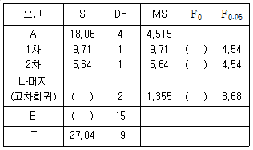
- 3차 이상의 고차 회귀 변동은 2.71이다.
- 1차와 2차 회귀는 모두 유의하다.
- 2차 곡선 회귀로서 농도와 강도 간의 관계를 설명할 수 있다.
- 두 변수 간의 관련 관계를 설명하는 데 3차 이상의 고차 회귀가 필요하다.
(정답률: 53%)
9. 특성치의 산포를 제곱합(변동)으로 나타내고, 이 제곱합을 실험과 관련된 요인의 제곱합으로 분해하여 오차에 비해 큰 영향을 주는 요인을 찾아내는 분석기법은?
- 분산분석
- 중심극한정리
- 불량률분석
- 신뢰성 분석
(정답률: 63%)
10. A는 2수준, B는 3수준, C는 4수준인 3개의 인자를 선정해서 삼원배치법 실험을 하였다. 교호작용 A×C의 자유도는?
- 3
- 4
- 5
- 6
(정답률: 79%)
11. 기술적으로 의미가 있는 수준을 가지고 있으나 실험 후 최적수준을 선택하여 해석하는 것이 무의미하며, 제어인자와의 교호작용의 해석을 목적으로 채택하는 인자는?
- 집단인자
- 표시인자
- 블록인자
- 오차인자
(정답률: 59%)
12. 다음은 온도(A), 농도(B), 촉매(C)가 각각 2수준인 23형 실험을 한 데이터이다. 교호작용 B×C의 효과는?
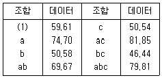
- 3.96
- 2.64
- 1.98
- 1.58
(정답률: 72%)
13. 반복 없는 삼원배치에서 A, B, C 가 모두 모수이고, 주효과와 교호작용 A×B, A×C, B×C가 모두 유의할 때,
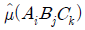
의 값은?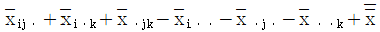
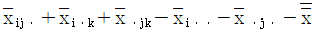
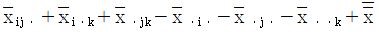
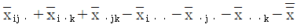
(정답률: 51%)
14. 다음은 인자 A는 4수준, 인자 B는 2수준, 인자 C는 2수준, 반복 2회의 지분실험법을 실시한 결과를 분산분석표로 나타낸 것이다. 설명으로 옳지 않은 것은?
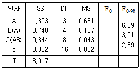
- 인자 B(A)의 분산비는 4.349로 유의수준 5%에서 유의하다.
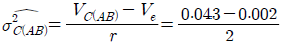
= 0.02⑤이다.- 인자 C(AB)의 분산의 기댓값(E(VC(AB)))은
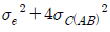
이다. - 인자 A는 검정 결과 유의수준 5%로 유의하지 않다.
(정답률: 62%)
15. 이원 배치실험에서 결측치가 하나 생겼을 때 추정값을 대입하여 분산분석을 하면 총 자유도는 하나 감소하는데 다음의 요인 중 어느 것의 자유도가 감소하는가?
- 주효과 A
- 주효과 B
- 교효작용 A×B
- 오차항 e
(정답률: 71%)
16. A인자를 4수준 취하고 4회 반복하여 16회 실험을 랜덤한 순서로 행하여 분석한 결과 다음과 같은 분산분석표를 얻었다. 오차의 표준편차의 추정치
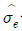
를 구하면 약 얼마인가?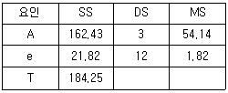
- 0.68
- 1.35
- 1.82
- 9.52
(정답률: 42%)
17. 22형 요인실험에서 주효과 A를 구하는 식은?
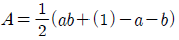
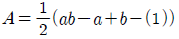
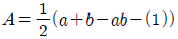
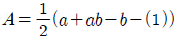
(정답률: 67%)
18. 일원 배치법에 대한 설명 중 틀린 것은?
- 특성치는 랜덤한 순서에 의해 구해야 한다.
- 반복의 수가 모든 수준에 대하여 같지 않아도 된다.
- 결측치가 있어도 그대로 해석할 수 있다.
- 교호작용의 유·무를 알 수 있다.
(정답률: 57%)
19. L16(215)직교배열표를 이용한 실험계획에서 2수준요인 효과를 최대로 몇 개까지 배치할 수 있는가?
- 7
- 8
- 15
- 16
(정답률: 78%)
20. 23 요인 배치법에서 다음과 같이 2개의 블록(Block)으로 나누어 실험하고 싶다. 블록과 교락하고 있는 교호작용은?
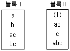
- A×B
- A×C
- B×C
- A×B×C
(정답률: 75%)
2과목: 통계적품질관리
21. KS Q 0001：2013 계수 및 계량 규준형 1회 샘플링 검사－제3부：계량 규준형 1회 샘플링 검사방식(표준편차 기지)에서 평균치 50g 이하인 로트는 될 수 있는 한 합격시키고 싶으나 평균치 54g 이상인 로트는 될 수 있는 한 불합격시키고 싶고 종전의 결과로부터 표준편차는 2g임을 알고 있다. 시료수 n과 상한합격 판정치
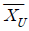
를 구하면 약 얼마인가? (단, α=0.⑤, β=0.10이며, Kα=1.645, Kβ=1.282이다.)(오류 신고가 접수된 문제입니다. 반드시 정답과 해설을 확인하시기 바랍니다.)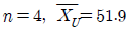
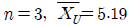
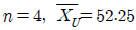
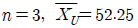
(정답률: 48%)
22. 품질변동 원인 중 우연원인(Chance Cause)에 의한 것으로 볼 수 없는 것은?
- 연속 4점이 중심선 한쪽에 나타난다.
- 점들이 관리한계선을 벗어나지 않는다.
- 점들이 랜덤하게 정규분포로 나타난다.
- 연속 15점이 중심선 근처에 나타난다.
(정답률: 44%)
23. 다음의 데이터로서 유의수준 5%로 평균치의 신뢰구간을 구하면 약 얼마인가? (단, t0.975(9)=2.262, t0.975(10)=2.228이다.)
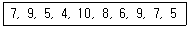
- 7.0±1.43
- 7.0±0.41
- 7.6±1.43
- 7.6±0.41
(정답률: 68%)
24. KS Q ISO 8423：2009 계량치 축차샘플링 검사방식(부적합품률, 표준편차 기지)에서 한쪽 규격이 주어지는 경우, 규격하한 L=200, σ=1.2이고 h4=4.312, hR=5.536, g=2.315및 nt=49를 표에서 얻었다면 ncum ＜ nt일 때의 합격판정치의 계산식은?
- 2.778cum+5.1744
- 2.778cum-6.6432
- 2.778cum+6.6432
- 2.778cum-5.1744
(정답률: 53%)
25. 갑, 을 2개의 주사위를 굴렸을 때 적어도 한쪽에 홀수의 눈이 나타날 확률은?
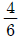
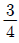
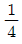
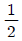
(정답률: 69%)
26. KS Q ISO 2859－3：2010 계수치 샘플링검사절차－제3부：스킵 로트 샘플링검사 절차 “7. 검사기능 및 소관 권한자의 책임”에서는 검사 기능이 공급자와 소관 권한자가 합의한 빈도로 공급자의 품질관리시스템을 재조사하는 것을 요구하고 있다. 만일 빈도의 합의가 없다면 자격심사기준은 몇 개월인가?
- 1개월
- 3개월
- 6개월
- 12개월
(정답률: 61%)
27. A, B 두 개의 천칭으로 같은 물건을 측정하여 얻은 데이터로부터 편차제곱합을 구하였더니 SA=0.04, SB=0.24로 나타났다. 천칭 A는 5회, 천칭 B는 7회 측정한 결과였다면 유의수준 5%로 두 천칭 A, B 간에 정밀도에 차이가 있는가? (단, F0.975(6, 4)=9.20, F0.975(4, 6)=6.23이다.)
- 차이가 있지만 어느 것이 좋은지 알 수 없다.
- 차이가 있다고 할 수 없다.
- A의 정밀도가 좋다.
- B의 정밀도가 좋다.
(정답률: 57%)
28.
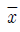
관리도에 있어서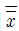
= 122.968,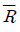
= 2.8, n=6일 때 UCL의 값은 약 얼마인가? (단, n=6일 때 A2=0.483이다.)- 123.30
- 124.32
- 126.30
- 128.32
(정답률: 59%)
29. 다음 설명 중 옳지 않은 것은?
- 정밀도는 데이터 분포 폭의 크기를 뜻한다.
- 정확도는 측정치와 그 기대치의 추정치와의 차이이다.
- 오차는 측정치와 모집단의 참값과의 차이이다.
- 치우침은 측정치의 평균과 모집단의 참값과의 차이이다.
(정답률: 38%)
30. N(μ, σ2(을 따르는 모집단에서 크기 n인 시료를 추출한 후 시료평균
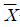
를 구하여 모평균 (μ)을 추정할 경우 모평균이 신뢰구간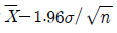
과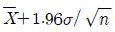
포함될 확률은 얼마인가?- 5%
- 10%
- 95%
- 99%
(정답률: 66%)
31. 관리도에 관한 다음 설명에서 옳지 않은 것은?
- 관리도의 목적은 공정에 대한 이상원인을 탐지하는 데 있다.
- 타점하는 통계량이 관리한계선을 벗어날 경우 이상상태라고 판단한다.
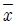
관리도에서 3σ 관리한계선을 사용할 경우 제1종의 과오 α는 0.⑤이다.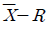
관리도는 중심선에서 관리한계선까지의 폭을 통계량의 표준편차의 3배수로 주로 사용한다.
(정답률: 63%)
32. 전체 학생들의 성적이 정규분포를 따르는지 적합도 검정을 활용하여 검정하고자 한다. 검정 절차 중 잘못된 것은?
- 검정통계량은 카이제곱분포를 이용한다.
- 귀무가설은 정규분포라고 가정한다.
- 각각의 분류한 급에 대한 기대도수는 카이제곱분포로 계산한다.
- 자유도는 조사한 데이터를 급으로 분류할 때, 급의 수보다 1이 적다.
(정답률: 45%)
33. 임계 부적합품률이 45%이다. 부적합품 1개로 인한 손해액이 250원일 때 개당 검사비용은 약 얼마인가?
- 200원
- 113원
- 90원
- 75원
(정답률: 71%)
34. 샘플링에 관한 설명으로 옳지 않은 것은?
- 2단계 샘플링은 층별 샘플링에 비해 추정의 정밀도가 좋고 샘플링의 조작도 쉬우므로 권장할 만하다.
- 취락샘플링은 로트 간 산포가 크면 추정 정밀도가 나빠진다.
- 층별 샘플링은 추정의 정밀도가 좋으나, 각 로트 내 산포가 크면 추정의 정밀도가 나빠진다.
- 사전에 모집단에 대한 정보나 지식이 없을 경우 단순랜덤 샘플링이 적당하다.
(정답률: 68%)
35. 측정된 데이터에 대한 산포를 측정하는 데 널리 이용되고 있는 통계량으로 산술평균에서 각 데이터들에 대한 차의 제곱값을 계산하여 합한 후 자유도로 나누고 그 값에 대해 다시 제곱근을 취 하여 구한 값은?
- 변동
- 표본분산
- 표본표준편차
- 변동계수
(정답률: 64%)
36. u관리도에 대한 설명으로 옳은 것은?
- 부적합수 C의 분포는 일반적으로 이항분포를 따른다.
- 시료의 면적이나 길이가 일정한 경우에만 사용한다.
- 은 에 의해 구할 수 있다.
- 은 C관리도를 이용하면 와 같다.
(정답률: 53%)
37. 생산자 위험과 소비자 위험에 대한 설명 중 옳지 않은 것은?
- 샘플링 오차의 관점에서 보면 전수검사를 할경우 생산자 위험과 소비자 위험은 이론적으로 0이 된다.
- 시료의 크기를 고정하면 합격판정 개수에 따라 생산자 위험과 소비자 위험은 상충관계에 있다.
- 합격판정 개수를 고정하면 시료의 크기에 따라 생산자 위험과 소비자 위험은 상충관계에 있다.
- 고정 퍼센트 샘플링검사에서 시료의 크기와 합격판정 개수의 비율이 일정하면 두 값의 변화와 관계없이 생산자 위험과 소비자 위험은 변하지 않는다.
(정답률: 54%)
38. 어떤 회귀식에 대한 분산분석표가 다음과 같을 때 회귀관계에 대한 설명으로 옳은 것은? (단, F0.95(2, 7)=4.74, F0.99(2, 7)=9.55이다.)
- 유의수준 1%로 회귀관계는 매우 유의하다.
- 유의수준 5%로 회귀관계는 유의하지 않다.
- 유의수준 5%로 회귀관계는 유의하나 1%로는 유의하지 않다.
- 위의 자료로는 판단할 수 없다.
(정답률: 61%)
39. 타이어 제조회사에서 생산 중인 타이어의 수명시간은 평균이 37,000km이고, 표준편차는 5,000km인 것으로 알려져 있다. 타이어의 수명을 증가시키는 공정을 개발하고 시제품을 100개 생산하여 조사한 결과 평균수명이 38,000km였다. 타이어 수명시간의 표준편차가 5,000km로 유지된다고 할 때, 유의수준 5%로 평균수명이 증가하였는지 검정한 결과로 틀린 것은?
- 대립가설 H1:μ＞37,000
- 기각치=1.96
- 검정통계량 U0=2.0
- 귀무가설 (H0)기각
(정답률: 60%)
40. 우리 회사에서 제조하는 자전거에 대한 부적합 수는 평균적으로 자전거 한 대당 m＝3이었다. 최근에 공정을 개선하여 자전거 1대당의 부적합 수의 정보를 얻고자 한다. 이때 부적합 수에 적용되는 분포는?
- 이항분포
- 포아송분포
- 초기하분포
- t분포
(정답률: 66%)
3과목: 생산시스템
41. 다음과 같이 자료가 주어진 설비의 설비종합 효율은 약 얼마인가?
- 20%
- 22%
- 25%
- 28%
(정답률: 52%)
42. 웨스팅하우스사(Westinghouse Co.)에서 개발한 평정시스템의 요소가 아닌 것은?
- 속도(Speed)
- 숙련(Skill)
- 작업조건(Condition)
- 일관성(Consistency)
(정답률: 59%)
43. 보전활동 중 처음부터 보전이 불필요한 설비를 설계하는 것으로 보전을 근원적으로 방지하는 것은?
- 사후보전
- 예방보전
- 개량보전
- 보전예방
(정답률: 65%)
44. 두 대의 기계를 거쳐 수행되는 작업들의 총 작업 시간을 최소화하는 투입순서를 결정하는 데 가장 중요한 것은?
- 작업의 납기
- 두 기계의 최단 작업소요시간
- 시스템 내 평균 작업 수
- 작업의 도착순서
(정답률: 67%)
45. 다음 중 수행도 평가방법이 아닌 것은?
- 평준화법
- 속도평가법
- 라인밸런싱법
- 객관적 평가법
(정답률: 68%)
46. 제품 A를 자체 생산할 경우 연간 고정비는 100,000원, 개당 변동비는 50원, 판매가격은 150원이다. 손익분기점의 수량은?
- 800개
- 900개
- 1,000개
- 1,100개
(정답률: 69%)
47. 추세변동, 순환변동, 계절변동, 우연 또는 불규칙 변동은 어느 분석기법에서 나타나는 현상인가?
- 회귀분석
- 시장조사법
- 델파이법
- 시계열분석법
(정답률: 58%)
48. 그림과 같은 프로젝트 네트워크의 주공정(Critical Path)은?
- ⓐ → ⓒ → ⓓ → ⓔ
- ⓐ → ⓑ → ⓔ → ⓕ
- ⓐ → ⓑ → ⓔ → ⓓ → ⓕ
- ⓐ → ⓔ → ⓕ
(정답률: 62%)
49. 3개월 가중이동평균법을 이용하여 예측한 4월 수요의 예측값은?
- 510
- 610
- 710
- 810
(정답률: 63%)
50. 길브레스(Gilbreth) 부부의 업적에 해당하지 않는 것은?
- 필름분석
- 동작분석
- 가치분석
- 서블릭기호
(정답률: 63%)
51. 라인작업에서 1일 목표 생산량 600개, 1일 조업시간 480분, 오전 및 오후 휴식시간은 총 40분이다. 작업불량률은 3%, 고장에 의한 컨베이어 정지를 고려한 라인여유율이 5%일 경우 사이클타임(Cycle Time)은 약 얼마인가?
- 0.578분
- 0.676분
- 0.750분
- 0.812분
(정답률: 63%)
52. 작업수행도평가(Performance Rating)를 실시하는 절차가 옳게 나열된 것은?
- ⓐ－ⓑ－ⓒ－ⓓ
- ⓓ－ⓐ－ⓑ－ⓒ
- ⓓ－ⓐ－ⓒ－ⓑ
- ⓐ－ⓒ－ⓑ－ⓓ
(정답률: 58%)
53. 공정분석 기법에 해당하지 않는 것은?
- 제품공정분석
- 사무공정분석
- 작업자공정분석
- ABC공정분석
(정답률: 52%)
54. 구매관리방식 중 집중구매방식의 특성으로 옳지 않은 것은?
- 대량구매로 가격과 거래조건이 유리하다.
- 시장조사, 거래처조사, 구매효과의 측정 등을 효과적으로 실행할 수 있다.
- 종합구매로 구매비용이 적게 든다.
- 공장별 자재의 긴급조달이 용이하다.
(정답률: 72%)
55. JIT 시스템에서 정의하고 있는 7가지 낭비 유형에 해당하지 않는 것은?
- 동작의 낭비
- 부품의 낭비
- 운반의 낭비
- 대기의 낭비
(정답률: 58%)
56. 다품종 생산 일정계획 수립 시 고려할 내용이 아닌 것은?
- 품목별 생산완료시점
- 작업장별 생산품목
- 판매가격
- 품목별 생산수량
(정답률: 65%)
57. 로트 사이즈 결정방법이 아닌 것은?
- 브라운－깁슨(Brown－Gibson) 방법
- 고정기간소요(Fixed Period Requirement) 방법
- 기간발주량(Period Order Quantity) 방법
- 경제적 1회 주문량(Economic Order Quantity) 모형
(정답률: 56%)
58. 고객서비스 수준을 만족시키면서 시스템의 전체 비용을 최소화하기 위해 공급자, 제조업자, 창고업자, 소매업자들을 효율적으로 통합하는 데 이용되는 일련의 접근방법은?
- SCM
- POP
- MRP
- EOQ
(정답률: 66%)
59. 스톱워치에 의한 시간관측방법 중 계속법에 관한 설명에 해당되지 않는 것은?
- 첫 번째 요소작업이 시작되는 순간에 시계를 작동시켜 관측이 끝날 때까지 시계를 멈추지 않고 요소작업의 종점마다 시계바늘을 읽어 관측용지에 기입하는 방법으로 측정한다.
- 불규칙하거나 비반복적인 작업측정에 적합하다.
- 요소작업의 사이클타임이 짧은 경우에 적용이 용이하다.
- 매 작업요소가 끝날 때마다 바늘을 멈추고 원점으로 되돌릴 때 발생하는 측정오차가 거의 없다.
(정답률: 51%)
60. 평균 발주량이 70,000개이고 안전재고가 1,000개 일 때 평균 재고량은 얼마인가?
- 71,000개
- 70,000개
- 35,000개
- 36,000개
(정답률: 40%)
4과목: 신뢰성관리
61. 지수분포를 따르는 어떤 부품의 평균수명에 대한 신뢰구간을 신뢰수준 1－α로 구하기 위하여 n개의 샘플로 γ개가 고장 날 때까지 시험을 하였다. 양측 신뢰구간의 하한치를 구하기 위하여 MTBF 값에 곱하는 계수는? (단, n ＞ γ이다.)
(정답률: 49%)
62. 순간고장률 λ(t)는?
(정답률: 66%)
63. 신뢰도가 각각 R1, R2, R3인 3개의 부품으로 구성된 병렬시스템의 신뢰도는?
- R1ㆍ R2ㆍ R3
- 1-(1-R1)(1-R2)(1-R3)
- 1-R1R2R3
- (1-R1)(1-R2)(1-R3)
(정답률: 67%)
64. 예방보전에 대한 설명으로 옳지 않은 것은?
- 노화가 시작되는 부품의 수리
- 주유, 청소, 조정 활동
- 불량부품의 교환·수리 활동
- 고장 시 원인을 발견하기 위한 시험검사
(정답률: 42%)
65. 신뢰도 R(t)와 불신뢰도 F(t)의 관계를 옳게 나타낸 것은?
- F(t)=R(t)-1
- F(t)=1-R(t)
- R(t)=F(t)-1
- R(t)=1-F(t)/2
(정답률: 75%)
66. 신뢰성 보증시험에서 계량형 특성을 갖는 자료를 분석하는 데 사용되는 수명분포는?
- 지수분포
- 초기하분포
- 이항분포
- 베르누이분포
(정답률: 63%)
67. 10,000시간당 고장률이 각각 25, 38, 15, 50, 102 인 지수분포를 따르는 부품 5개로 구성된 직렬 시스템의 평균수명은 약 몇 시간인가?
- 50.⑤시간
- 43.48시간
- 40.12시간
- 36.29시간
(정답률: 66%)
68. 여러 가지 종류의 부품으로 구성된 기기의 고장률 함수는 욕조곡선을 따른다고 할 때 다음 중 틀린 것은?
- 초기고장은 번인(Burn－in)시험에 의해 감소시킬 수 있다.
- 초기고장기간은 시간이 경과함에 따라 고장률이 점점 증가한다.
- 마모고장기간의 고장률을 감소시키기 위해서는 예방보전이 유효하다.
- 일정형 고장률을 갖는 우발고장기간에서는 사후보전이 유효하다.
(정답률: 72%)
69. 한 대의 기계를 50시간 동안 연속사용(수리시간 포함)한 경우 5회의 고장이 발생하였고, 각각의 고장수리시간이 다음과 같다. 이 기계의 가용도(Availability)는? (단, 작동시간을 이용하여 구한다.)
- 80%
- 82%
- 88%
- 94%
(정답률: 67%)
70. 기계부품이 진동에 의한 피로현상으로 파괴되었다. 이때 고장원인, 고장 메커니즘 및 고장모드를 구분한 것으로 가장 옳은 것은?
- 고장원인－진동, 고장 메커니즘－파괴,고장모드－피로
- 고장원인－파괴, 고장 메커니즘－피로, 고장모드－진동
- 고장원인－피로, 고장 메커니즘－진동, 고장모드－파괴
- 고장원인－진동, 고장 메커니즘－피로, 고장모드－파괴
(정답률: 60%)
71. 와이블 분포의 확률밀도함수가 다음과 같을 때 설명 중 틀린 것은? (단, m은 형상모수, η는 척도 모수이다.)
- 와이블 분포는 수명자료 분석에 많이 사용되는 수명분포다.
- 와이블 분포는 고장률 함수가 형상모수 m의 변화에 따라 증가형, 감소형, 일정형으로 나타난다.
- 와이블 분포는 지수분포에 비해 모수 추정이 간단하다.
- 와이블 분포에서 t=η일 때를 특성수명이라 한다.
(정답률: 67%)
72. 고장시간이 지수분포를 따르고, 평균수명이 100시간인 2개의 부품이 병렬결합모델로 구성되어 있을 때 150시간에서의 신뢰도는 약 얼마인가?
- 0.396
- 0.487
- 0.513
- 0.6321
(정답률: 40%)
73. 40개의 시험제품 중 30개가 고장이 발생하였을 때 평균순위법을 이용하여 신뢰도 R(t)를 구하면 약 얼마인가?
- 0.347
- 0.327
- 0.287
- 0.268
(정답률: 66%)
74. 신뢰성은 시간의 경과에 따라 저하된다. 그 이유에는 사용시간 또는 사용횟수에 따른 피로나 마모에 의한 것과 열화현상에 의한 것들이 있다. 이와 같은 마모와 열화현상에 대하여 수리 가능한 시스템을 사용 가능한 상태로 유지시키고, 고장이나 결함을 회복시키기 위한 제반조치 및 활동은?
- 가동
- 보전
- 안전성
- 추정
(정답률: 72%)
75. 신뢰도가 0.9로 동일한 부품 2개를 결합하여 만든 시스템이 2개 부품 중 어느 하나만 작동하면 기능을 발휘한다고 할 때, 이 시스템의 신뢰도는?
- 0.19
- 0.81
- 0.90
- 0.99
(정답률: 66%)
76. 수명이 지수분포를 따르는 제품에 대해 10개를 샘플링하여 7개가 고장날 때까지 수명시험을 하였더니 다음과 같은 고장시간 데이터를 얻었다. 그리고 샘플 중 고장난 것은 새것으로 교체하지 않았다. 평균수명시간의 점 추정값을 구하면 약몇 시간인가?
- 28시간
- 35시간
- 39시간
- 42시간
(정답률: 68%)
77. 예정된 시험기간 내에 샘플이 모두 고장나지 않아 시험조건을 사용조건보다 가혹하게 부가하여 고장발생시간을 단축하는 시험은?
- 가속수명시험
- 정상수명시험
- 중도중단시험
- 정시단축시험
(정답률: 68%)
78. KS A 3004：2002 용어－신인성 및 서비스 품질에서 정의하고 있는 고장에 관한 용어 중 아이템의 주어진 특성이 시간에 따른 점진적인 변화에 의해 발생하여 요구기능 중 일부 기능을 수행할 수 없게 하는 고장은?
- 열화고장
- 돌발고장
- 취약고장
- 일차고장
(정답률: 68%)
79. 와이블 분포의 형상모수(m)가 3, 척도모수(η)가 100시간인 기기가 있다. 이 기기에 대한 평균수명은 약 얼마인가? (단, =0.89338, =0.9033)
- 1,⑤1.72시간
- 179.67시간
- 90.33시간
- 89.338시간
(정답률: 59%)
80. 그림의 신뢰성 블록도에 맞는 FT도는?
(정답률: 63%)
5과목: 품질경영
81. 부품의 끼워맞춤 형태에 속하지 않는 것은?
- 틈새 끼워맞춤
- 억지 끼워맞춤
- 중간 끼워맞춤
- 헐거운 끼워맞춤
(정답률: 50%)
82. 문제가 되고 있는 사상 중 대응되는 요소를 찾아내어 행과 열로 배치하고, 그 교점에 각 요소 간의 연관 유무나 관련 정도를 표시함으로써 문제의 소재나 형태를 탐색하는 데 이용되는 기법은?
- 특성요인도
- 계통도법
- 친화도법
- 매트릭스도법
(정답률: 75%)
83. 다음 중 기술표준에 속하지 않는 것은?
- 재질
- 절차
- 치수
- 형상
(정답률: 47%)
84. 품질보증에 관한 업무로서 내부품질감사 계획에 포함되지 않는 것은?
- 감사대상
- 감사요원이 근무기간
- 감사요원의 자격
- 감사를 실시하는 이유
(정답률: 60%)
85. 측정시스템에서 안정성(Stability)에 대한 설명으로 옳지 않은 것은?
- 안정성은 시간이 지남에 따른 동일 부품에 대한 측정 결과의 변동 정도를 의미한다. 시간이 지남에 따라 측정된 결과가 서로 다른 경우 안정성이 결여된 것이다.
- 안정성 평가를 위한 관리도는 측정시스템의 정확도와 반복성을 동시에 모니터링해야 하므로 매번 동일 시료를 3~5회 정도 반복 측정 하도록 한다.
- 안정성 분석방법에서 평균관리도는 측정평균의 이동상황을 나타낸다.
- 안정성 분석방법에서 산포관리도가 관리상태가 아니지만 평균관리도가 관리상태이면 측정시스템이 더 이상 정확하게 측정할 수 없음을 뜻한다.
(정답률: 47%)
86. 국가규격 표시가 옳지 않은 것은?
- 독일：DIN
- 영국：BS
- 미국：ASTM
- 프랑스：NF
(정답률: 63%)
87. 서비스의 개념과 특징에 대한 설명으로 옳지 않은 것은?
- 물리적 기능과 정서적 기능은 서비스 산업에서 서비스를 구성하는 2대 기능으로, 대개는 서비스 산업의 업종에 따라 두 기능의 비중이 다르다.
- 물리적 기능은 서비스도 사전에 검사되고 시험되어야 한다는 측면에서 측정 가능하고 재현성이 있는 사항에 대한 형이상학적 기능을 말한다.
- 정서적 기능은 물리적 기능에 부가해서 고객에게 정서, 안심감, 신뢰감 등 정신적 기쁨의 감정을 불러일으키는 기분이나 분위기를 주는 움직임을 말한다.
- 전기, 가스, 수도, 운수, 통신 등의 업종은 물리적 기능의 비중이 높고, 음식점과 여관 등의 업종은 물리적 기능과 정서적 기능의 비율이 분산되어 있다.
(정답률: 62%)
88. 두 개의 짝으로 된 데이터의 상관계수가 '－0.9'이다. 이것은 무엇을 의미하는가?
- 무상관 관계를 나타낸다.
- 음의 상관관계를 나타낸다.
- 양의 상관관계를 나타낸다.
- 어떤 관계가 있는지 알 수 없다.
(정답률: 67%)
89. 제조물 책임법(PL법)이 적용되는 것은?
- 가공되지 않은 농수산물
- 정보서비스
- 가축
- 통행로에 설치된 보도블록
(정답률: 64%)
90. 품질선구자들의 품질사상을 설명한 것으로 옳지 않은 것은?
- 슈하트(Shewhart)－관리도 개발
- 데밍(Deming)－통계적방법에 의한 종합 품질 확보
- 크로스비(Crosby)－제품품질과 설계의 통합
- 파이겐바움(Feigenbaum)－종합적 품질관리
(정답률: 51%)
91. KS Q ISO 9000：2007 품질경영시스템－기본사항 및 용어에 대한 설명으로 옳은 것은?
- 결함(Defect)：의도되거나 규정된 용도/사용에 관련된 요구사항의 불충족
- 예방조치(Preventive Action)：발견된 부적합 또는 기타 바람직하지 않은 상황의 원인을 제거하기 위한 조치
- 시정조치(Corrective Action)：잠재적인 부적합 또는 기타 바람직하지 않은 잠재적 상황의 원인을 제거하기 위한 조치
- 특채(Concession)：규정된 요구사항에 적합한 제품의 사용 또는 불출을 허용하는 것
(정답률: 43%)
92. 4개의 PCB 제품에서 각 제품마다 10개를 측정했을 때 부적합 수가 각각 2개, 1개, 3개, 2개가 나왔다. 이때 6시그마 척도인 DPMO(Defects Per Million Opportunities)는?
- 2.0
- 0.2
- 200,000
- 800,000
(정답률: 51%)
93. KS Q ISO 9001：2009 품질경영시스템－요구사항에서 규정하고 있는 경영대리인의 역할이 아닌 것은?
- 품질경영시스템에 필요한 프로세스가 수립되고 실행되며 유지됨을 보장
- 최고경영자에게 품질경영시스템 성과 및 개선의 필요성에 대한 보고
- 부적합 또는 부적합품이 고객에게 전달되지 않음을 보장
- 조직 전체에 걸쳐서 고객요구사항에 대한 인식의 증진을 보장
(정답률: 60%)
94. 산업표준화법에서 지정하고 있는 산업표준화의 대상에 해당되지 않은 것은?
- 광공업품의 제도방법, 생산방법, 설계방법
- 광공업품의 시험, 분석, 감정, 부호, 단위
- 구축물과 그 밖의 공작물의 설계, 시공방법
- 전기통신 관련 서비스의 제공절차, 체계, 평가방법
(정답률: 63%)
95. 품질비용의 하나인 평가비용에 해당하는 것은?
- 품질개발 및 계획비용
- 품질개선 비용
- 시험실 비용
- 재검사 비용
(정답률: 42%)
96. 6시그마 추진을 위한 교육을 받고 현 조직에서 업무를 수행하면서 동시에 개선 활동팀에 참여하여 부분적인 업무를 수행하는 초급단계 요원은?
- 챔피언(Champion)
- 블랙벨트(Black Belt)
- 마스터블랙벨트(Master Black Belt)
- 그린벨트(Green Belt)
(정답률: 71%)
97. KS A ISO 3：2012 표준수 수열에 관한 KS 규격에서 기본수열 표시에 해당하지 않는 것은?
- R5
- R10(1.25...)
- R20/4(112...)
- R40(75...300)
(정답률: 59%)
98. 시장으로부터 부적합품 발생 통보가 올 경우 품질보증을 위해 행하는 불만처리절차에 해당하지 않는 것은?
- 법적인 대응
- 교환 및 사과
- 불량원인 분석
- 재발방지대책 수립
(정답률: 60%)
99. 기어 A, B, C가 선형으로 조립될 때, 조립품의 평균과 표준편차를 다음 데이터에 의해서 구하면 얼마인가?
- 평균=100, 표준편차=3
- 평균=100, 표준편차=5
- 평균=120, 표준편차=3
- 평균=120, 표준편차=5
(정답률: 56%)
100. Herzberg의 동기부여－위생 이론에서 만족(동기)요인에 해당하지 않는 것은?
- 승진, 지위
- 인정
- 성취감
- 자기실현
(정답률: 69%)
첫 번째 대비: (y1 + y2 + y3) / 3 - y1
두 번째 대비: (y1 + y2 + y3) / 3 - (y1 + y2) / 2
이 두 대비의 합을 0으로 만들기 위해서는 k가 2/3이 되어야 한다. 따라서, 정답은 ""이다.
보기에서 "-1"은 두 대비의 차이를 의미하는 대비이다. 직교대비를 이루기 위해서는 두 대비의 합이 0이 되어야 하므로, "-1"은 정답이 될 수 없다.